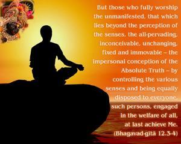
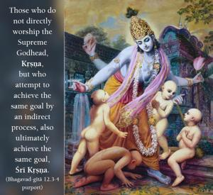
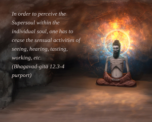
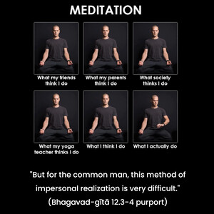

But those who fully worship the unmanifested, that which lies beyond the perception of the senses, the all-pervading, inconceivable, unchanging, fixed and immovable – the impersonal conception of the Absolute Truth – by controlling the various senses and being equally disposed to everyone, such persons, engaged in the welfare of all, at last achieve Me.




Those who do not directly worship the Supreme Godhead, Kṛṣṇa, but who attempt to achieve the same goal by an indirect process, also ultimately achieve the same goal, Śrī Kṛṣṇa. “After many births the man of wisdom seeks refuge in Me, knowing that Vāsudeva is all.” When a person comes to full knowledge after many births, he surrenders unto Lord Kṛṣṇa. If one approaches the Godhead by the method mentioned in this verse, he has to control the senses, render service to everyone and engage in the welfare of all beings. It is inferred that one has to approach Lord Kṛṣṇa, otherwise there is no perfect realization. Often there is much penance involved before one fully surrenders unto Him.
In order to perceive the Supersoul within the individual soul, one has to cease the sensual activities of seeing, hearing, tasting, working, etc. Then one comes to understand that the Supreme Soul is present everywhere. Realizing this, one envies no living entity – he sees no difference between man and animal because he sees soul only, not the outer covering. But for the common man, this method of impersonal realization is very difficult.